Esteban Leiva Montenegro, University of Luxembourg, esteban.leiva.001@student.uni.lu PRIMARY
Isaac Palma Medina, University of Luxembourg, isaac.palma.001@student.uni.lu
Andrii Ushakov, University of Luxembourg, andrii.ushakov.001@student.uni.lu
José Valdivia Agüero, University of Luxembourg, jose.valdivia.001@student.uni.lu
Student Team: YES
Tools Used
Approximately how many hours were spent working on this submission in total?
Approximately 95–105 hours in total across the team:
Video
Provide a link to your video. Example:
http://www.youtube.com/ul-smith-mc3-demo
Source Code
https://github.com/isaac-pm/UL-Leiva-Palma-Ushakov-Valdivia-C3
Images are clickable — click to zoom in
Use visual analytics to analyze the available data and develop responses to the questions to be provided. In addition, prepare a video that shows how you used visual analytics to solve this challenge.
Questions
1 - Over the period covered by the dataset, which businesses appear to be more prosperous? Which appear to be struggling? Describe your rationale for your answers. Limit your response to 10 images and 500 words.
Prosperous Businesses
Assuming direct revenue is unavailable, our analysis starts by defining estimated sales as check-in visits multiplied by listed venue cost. Applying sequential category filters (pubs vs. restaurants) and sorting by volume established our starting baseline. The most prosperous businesses are pubs, notably Pub 1342, Pub 1344, Pub 1798, Pub 1343, and Pub 1800. Pub 1342 leads with ~$712,658 in estimated sales from 50,400 visits and 631 unique customers. Pub 1344 commands 837 customers and 54,174 visits, yielding ~$564,238. Design rationale dictated building a ranked bar chart for rapid performance ranking and a linked portfolio scatterplot rather than a map, because prosperity is explained by customer reach and visit efficiency rather than geography. Interactive clicking and hovering connect these views to update a detail panel. Beyond hospitality, the Employment Patterns Map shows stable employers (#1297, #1298, #1789, #1767) with deep-green footprints (composite stability scores 1.00–1.38), maintaining steady headcounts of 4–6 workers across all 15 months, confirmed via the linked Workforce Dynamics Lifecycle heatmap.
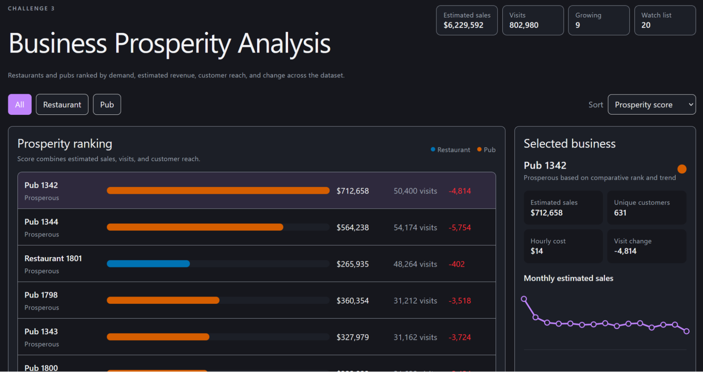
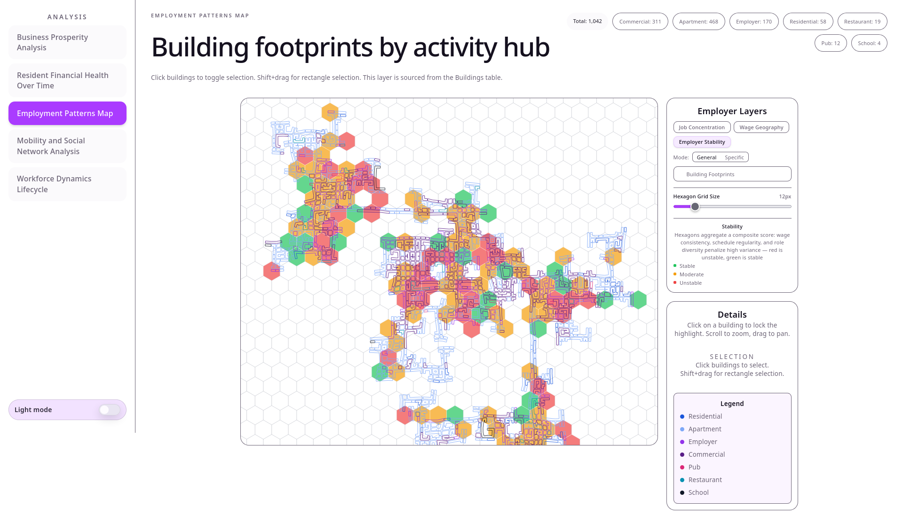
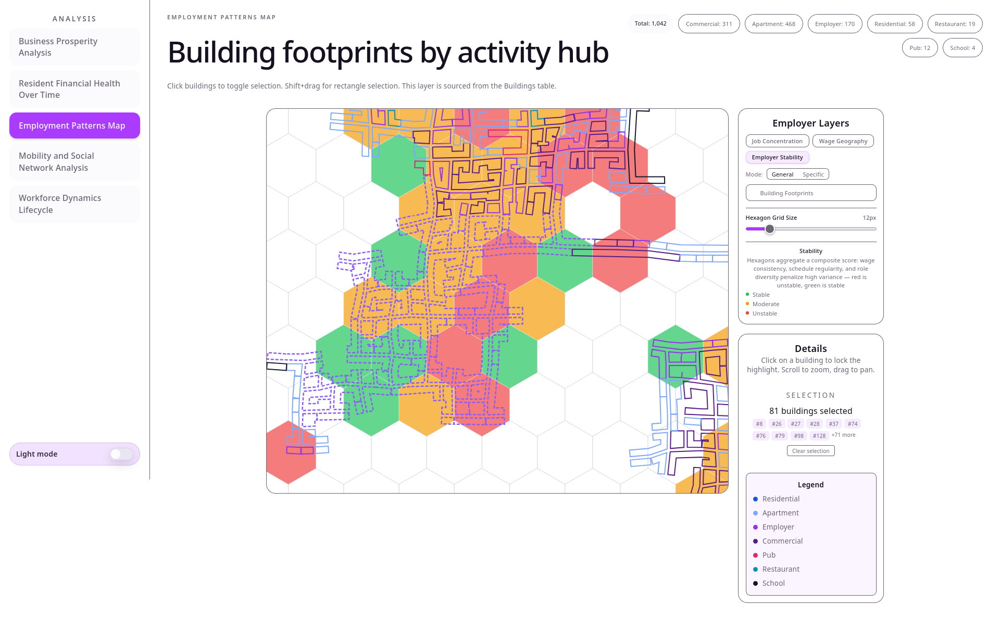
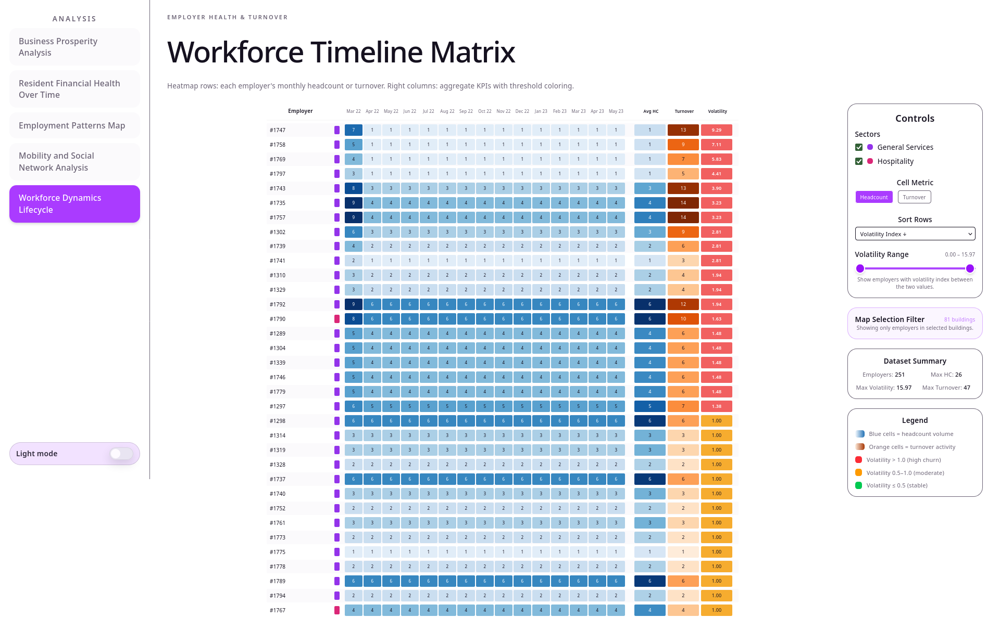
Struggling Businesses
Several restaurants rank at the bottom: Restaurant 1347, 1348, 1803, and 898 show low estimated sales and negative visit change (defined as second-half check-ins declining versus the first half). In the scatterplot, these cluster near the origin with small circle sizes, confirming weak traffic. On the workforce side, selecting clusters via Redux-linked spatial brushing filters the heatmap to expose severe anomalies: employers #1747, #1758, #1769, and #1743 exhibit extreme volatility indices (3.90–9.29). This reflects an acute anomaly: an initial sharp headcount contraction after March 2022 followed by stagnant, minimal staffing and disproportionately high turnover. Map stability layers render these footprints red due to high variance in wage consistency and schedule regularity.
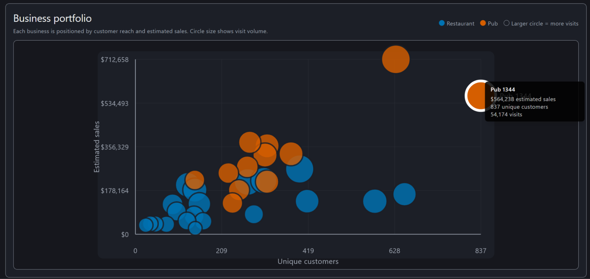
Rationale
Prosperity is evaluated through demand-side revenue proxies and supply-side workforce retention stability. Linking multiple coordinated views allows filtering by performance attributes or drawing spatial bounding boxes to instantly isolate underlying workforce churn. This visual analytics software reveals that steady employee retention correlates with predictable revenue. Conversely, the spatial inversion anomaly—where the highest job-density central hubs exhibit the most unstable turnover—proves that business size alone does not ensure health. Fragile hospitality micro-operators drive this instability, demonstrating the value of cross-tab coordination over isolated charts.
2 - How does the financial health of the residents change over the period covered by the dataset? How do wages compare to the overall cost of living in Engagement? Are there groups that appear to exhibit similar patterns? Describe your rationale for your answers. Limit your response to 10 images and 500 words.
Overall Trajectory
To resolve performance bottlenecks with the massive activity_logs table, our starting point for analysis extracted monthly balances from travel_journal.endingBalance and transactions from financial_journal, assuming these reliably proxy liquid wealth. We define financial stress as months where measured expenses exceed wages or ending balances fall below zero. Residents became measurably more financially secure: the Balance & Stress Trend chart shows median ending balances climbing from $2,810 in March 2022 to $33,637 in May 2023. Stress remained consistently low, peaking at 1.1% in April 2022 and dropping to 0.3% in May 2023.
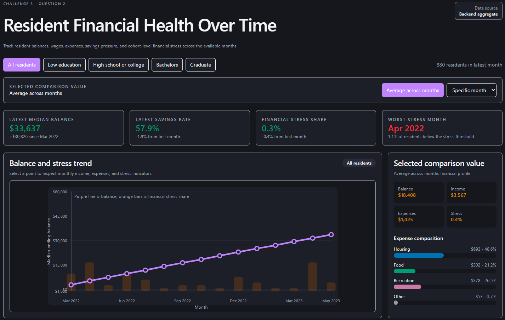
Wages vs. Cost of Living
Design rationale required coordinated views rather than a single plot to simultaneously evaluate temporal change, income margins, and cohort patterns. The Income vs. Expenses chart proves median wages consistently covered measured expenses, maintaining an income-to-expenses ratio between 2.31 and 2.71. Interactive filtering via the population dropdown and clicking specific month datapoints dynamically updates the expense composition panel. This interaction clearly shows housing as the dominant structural cost, consistently exceeding 50% of measured expenses across all months.
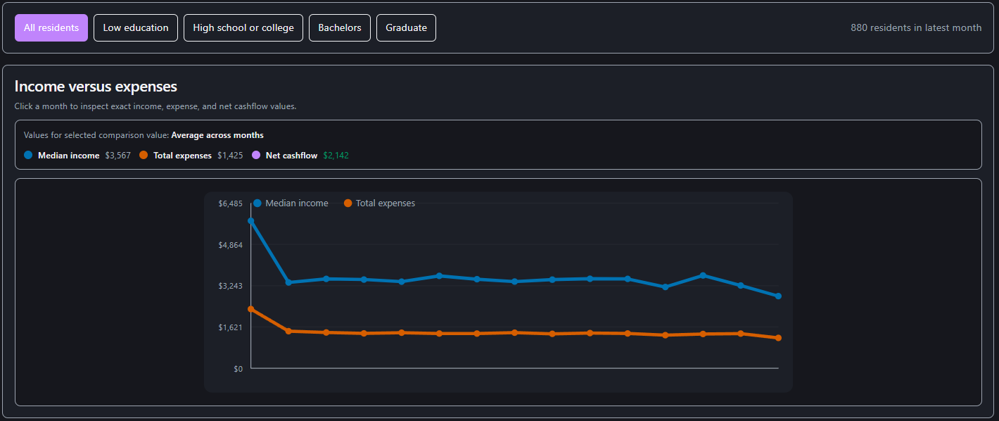
Cohort Patterns
A shared X-axis multi-line cohort chart with fixed Y-axis ranges was chosen to prevent automatic scaling distortions, making the gap between groups much easier to compare. Toggling metrics (Balance, Stress, Savings Rate) reveals extreme stratification: Graduates ended strongly at $55,827 with increasing savings rates, whereas Low Education residents ended at $18,135 with declining savings margins and an anomalous stress peak of 7.1% in June 2022. To explain these patterns, our visual analytics software links a multi-level Sankey diagram (income quartiles to travel purposes) with a force-directed Social Network Graph (Leiden community detection). Redux state management coordinates them: clicking a network cluster isolates related income flows in the Sankey. This reveals a distinct behavioral anomaly: high-income nodes maintain thick outbound flows for discretionary eating and recreation, while low-income flows concentrate strictly on commuting, reflecting severe financial constraints.
| Cohort | May 2023 Median Balance | Stress Peak | Stress End |
|---|---|---|---|
| Graduate | $55,827 | ~0.5% | ~0.1% |
| Bachelors | $45,083 | ~0.7% | ~0.2% |
| High School / College | $22,501 | ~1.2% | ~0.4% |
| Low Education | $18,135 | 7.1% (Jun 2022) | 1.8% |
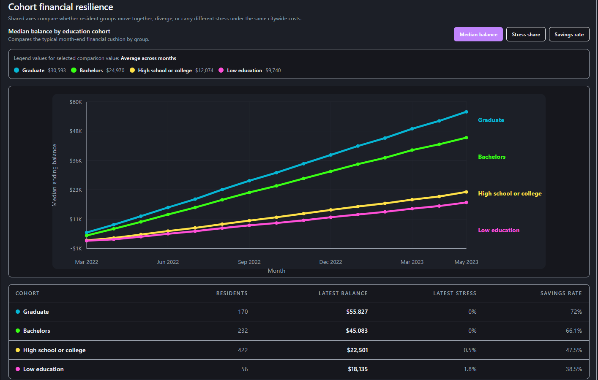
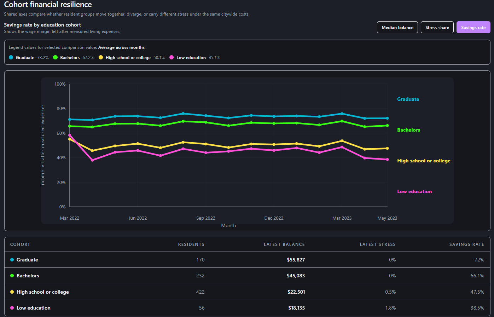
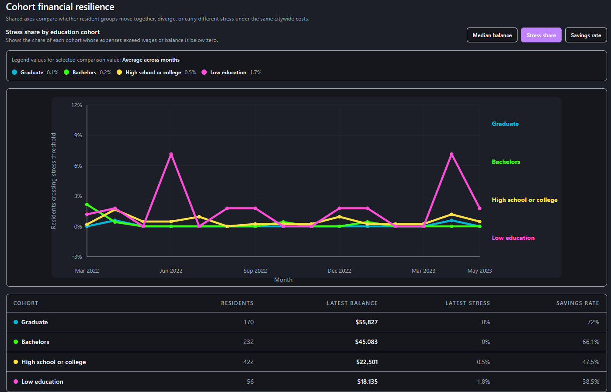
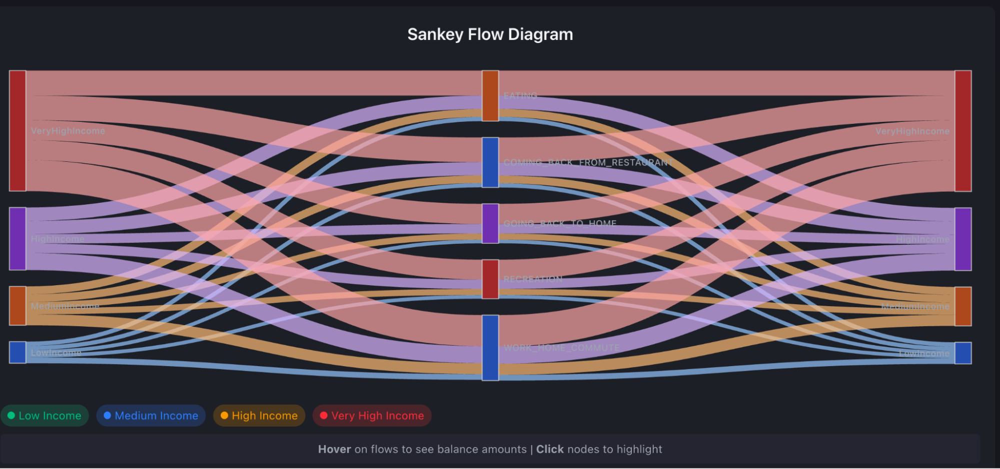
3 - Describe the health of the various employers within the city limits. What employment patterns do you observe? Do you notice any areas of particularly high or low turnover? Limit your response to 10 images and 500 words.
Spatial Structure of Employment
Our starting point for analysis aggregated individual employer coordinates into a dynamic D3 hexbin grid to resolve spatial overplotting while preserving geographic reality. Exploring job concentration at a 22px resolution identified two primary density clusters: one north-northwest and a highly dense central hub, establishing our excellent selection criteria for deeper exploration. Assuming spatial density reflects sectoral focus, toggling layer controls to the Wage Geography layer reveals overwhelming reddish and orange tones, confirming high-paying jobs (green) are rare outliers. The city's labor market relies structurally on low-wage commercial, restaurant, and retail sectors. Design rationale dictated thresholded stability fills to surface risk. Comparing 15px hexbin layers exposes an acute anomaly: a spatial inversion where the densest employment hubs are actually dominated by highly unstable employment, while stable jobs are sparsely dispersed peripherally.
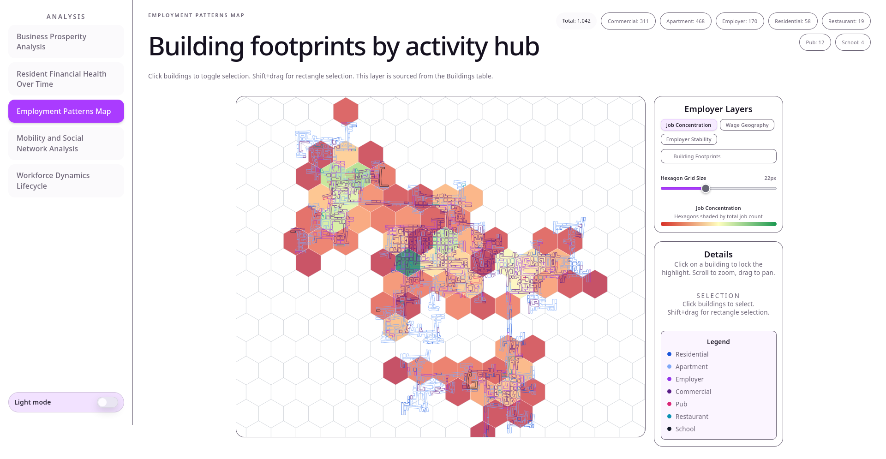
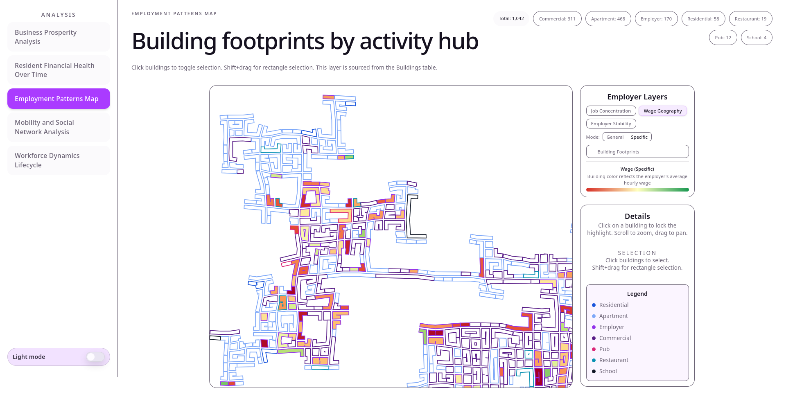
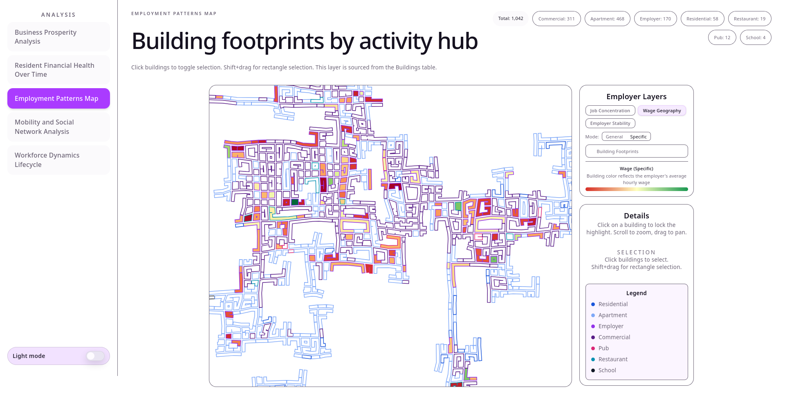
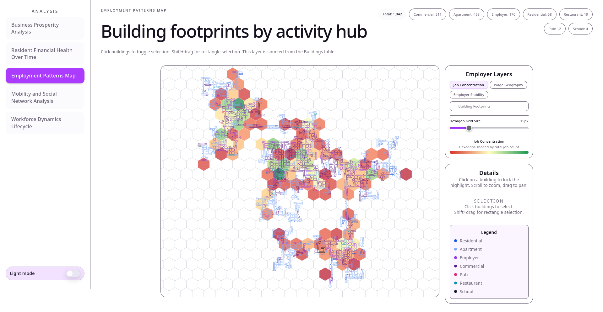
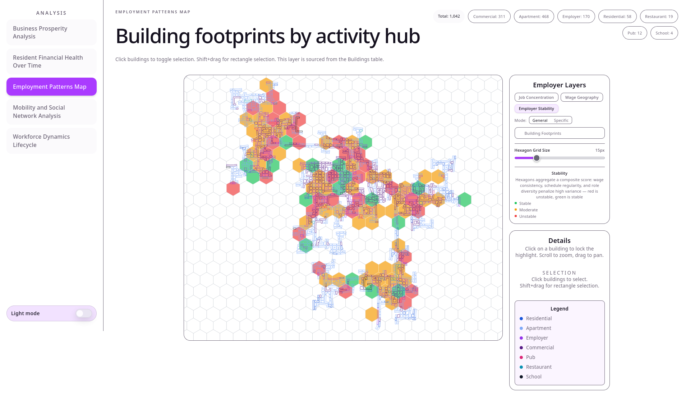
Temporal Employment Patterns
Applying an interactive sequence—using spatial brushing on the map to select the 77 central building footprints—instantly filters the linked Workforce Dynamics Lifecycle heatmap via Redux state management. This cross-view software coordination reveals a severe temporal anomaly: turnover activity spiked almost exclusively between March and April 2022, after which separations completely drop to zero. This defines an acute, synchronized restructuring shock rather than a continuous cycle of chronic attrition, forcing widespread layoffs simultaneously across dozens of businesses.
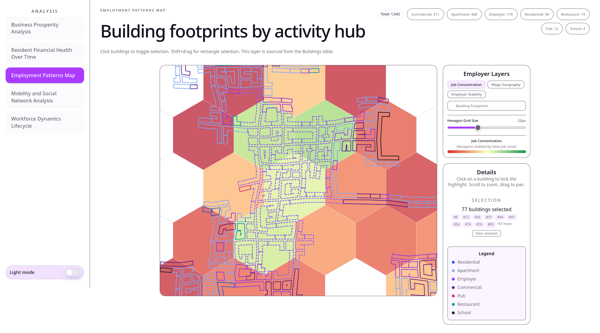
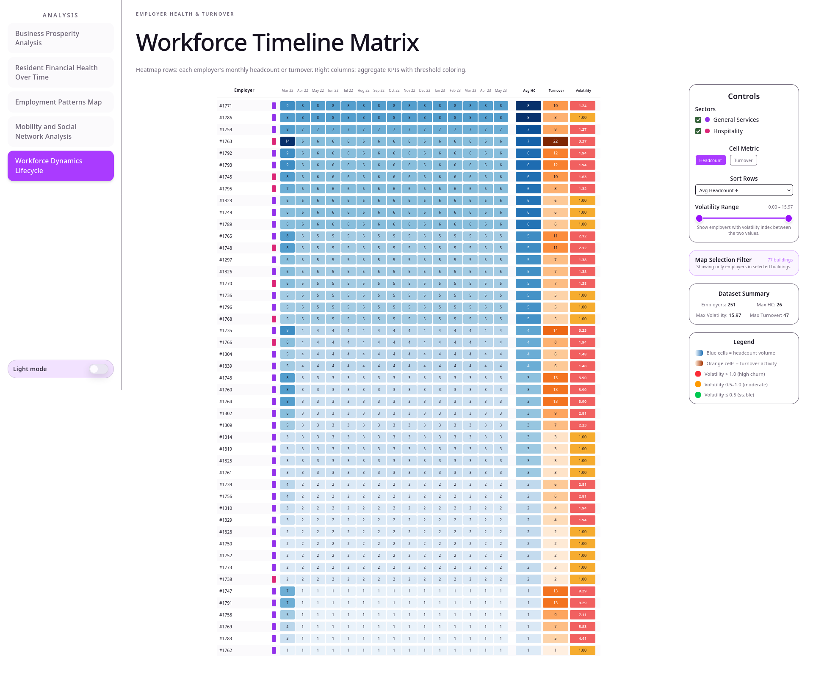
Turnover Concentration
We define workforce volatility as a composite score penalizing high variance in wage consistency, schedule regularity, and role diversity. Within the central hub, applying categorical filters for General Services and Hospitality and sorting by descending headcount exposes extreme polarization. Several micro-employers (average headcount of 1) exhibit severe volatility indices (4.41–9.29), as losing multiple staff members relative to their tiny size amplifies the score disproportionately. Conversely, larger baseline employers (#1771 holding at 8; #1763 stabilizing at 6) maintain stable scores (1.00–1.24). The heatmap matrix makes this scannable: top rows hold steady, while bottom rows display volatile bursts, proving aggregate turnover is disproportionately driven by fragile micro-operators.
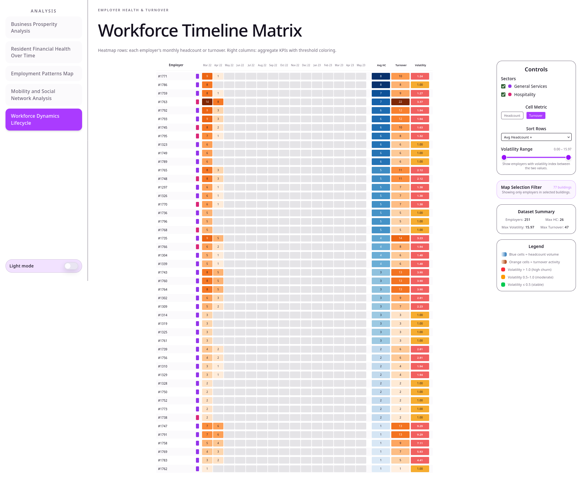
Cross-View Insight
Linking these views transforms isolated charts into a linked analytical workflow where map selections drive churn analysis. The force-directed Social Network Graph corroborates this: commute-dominant clusters (blue) coincide with the high-density, low-wage central hubs, confirming that structural employment geography and resident behavioral patterns are structurally aligned around these volatile zones.
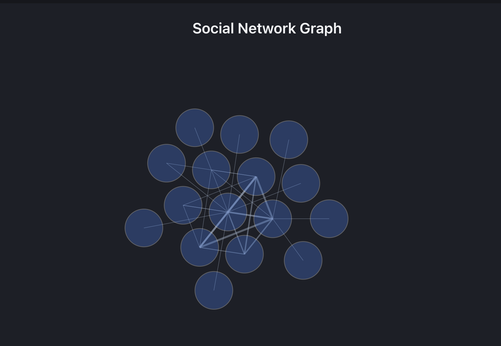
LLM Usage Statement and Analytical Report
This section formalizes the deployment of artificial intelligence models used to support the analytical, architectural, and implementation phases of the project. The following models were utilized:
General Purpose and Analytical Utility
The primary intent behind deploying these models was to offload macro-level document synthesis, complex structural diagnostics, and mathematical rendering logic. Rather than serving as passive syntax generators, the AI suite was actively queried to solve systemic architectural challenges across four overarching domains:
Deliverable Synthesis and Documentation: The models were asked to merge disparate, multi-expert analytical perspectives into cohesive standard reporting formats and draft comprehensive methodology texts. This provided critical utility by standardizing complex domain definitions, establishing uniform structural hierarchies, and automating the generation of required compliance documentation.
System Architecture and Diagnostic Debugging: Guidance was requested to design backend routing frameworks, coordinate state management between decoupled interface components, and construct data normalization pipelines. This proved highly useful for identifying and resolving underlying API routing failures, preventing runtime crashes, and correcting data serialization mismatches between backend arrays and frontend rendering layers.
Geometric Rendering and Interface Optimization: Strategies were sought to compute and render dense mathematical vector graphics directly within the interface without relying on external rendering engines, alongside requests to streamline layout components. The AI supplied utility by diagnosing coordinate axis distortions, resolving vector density flaws, and refactoring interface layouts to optimize spatial efficiency and visual clarity.
Algorithmic Visualization Logic: Instructions were requested to implement advanced visual encodings, coordinate multi-view data interactions, and map multi-tiered network flows. This assistance was useful because the models successfully flattened complex hierarchical datasets, pre-computed spatial positioning to minimize interface rendering latencies, and established programmatic filters to handle statistical outliers without distorting overarching macroeconomic trends.